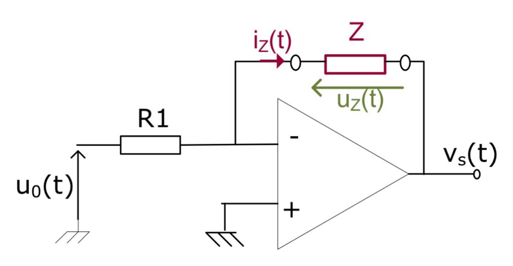
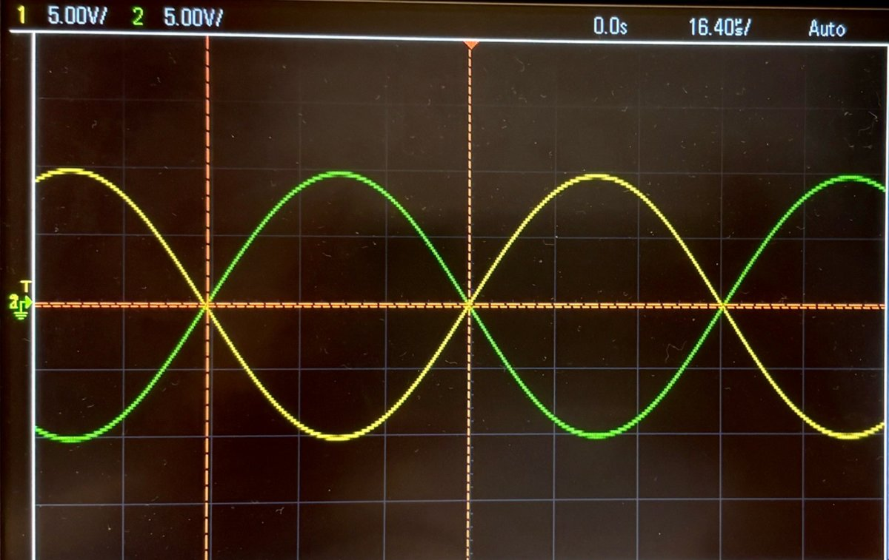
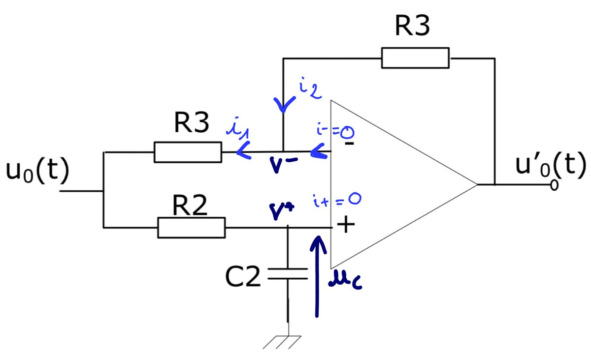
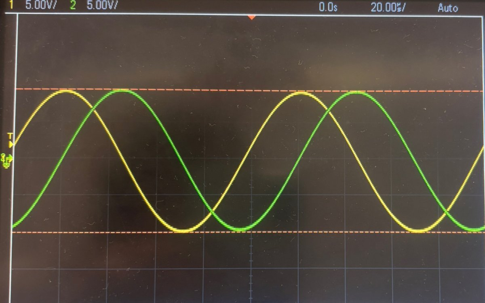
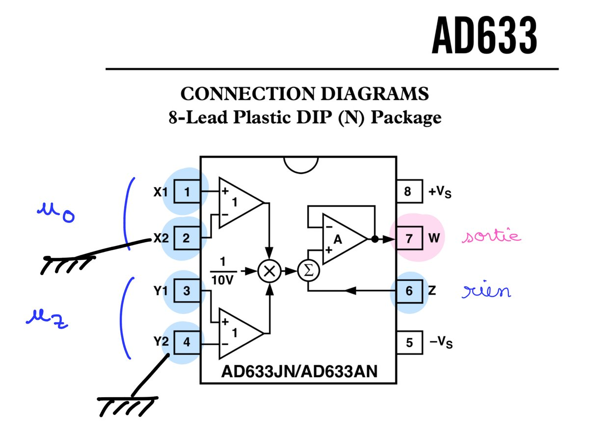
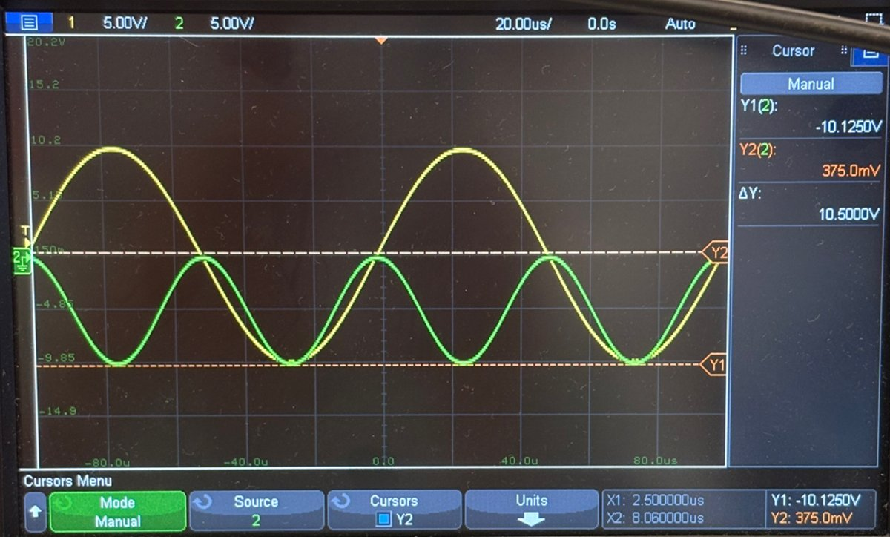
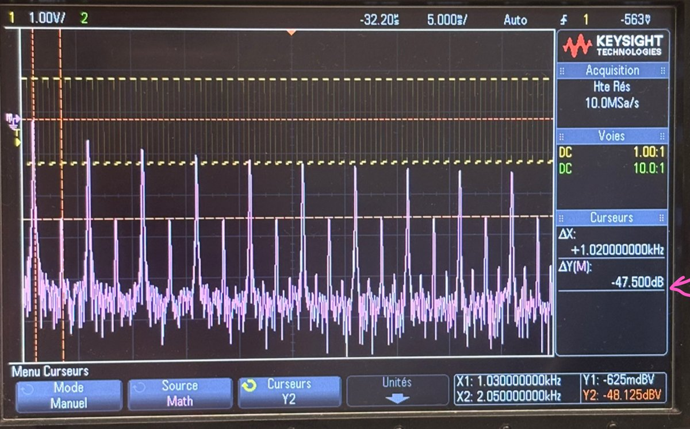
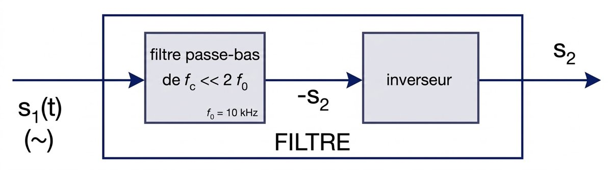
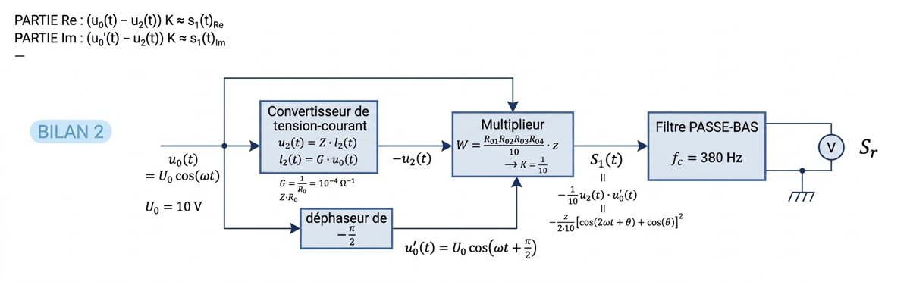
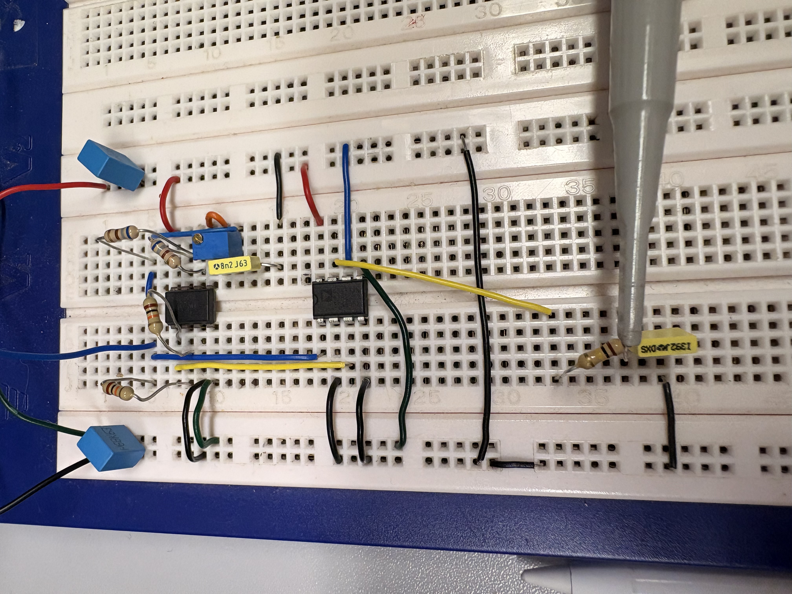

01Impedance Measurement2026
Context and goal
This ENSEEIHT project belongs to the “Basic electronic functions” module of the apprenticeship track. The goal was to build an electronic system that measures the real part (resistance R) and the imaginary part (reactance X) of an unknown impedance Z = R + jX, using synchronous detection.
Principle
A voltage-to-current converter forces a current through Z, proportional to a reference voltage u0(t). I multiply the voltage across Z by u0(t), which is in phase with that current, and keep only the average value: a DC voltage SR = (K·G·U0²/2)·Re{Z}, proportional to the resistance. Repeating the operation with the reference shifted by π/2 gives a voltage proportional to the reactance. I drew the functional block diagrams first, then the electrical ones, which made every block easy to size.
My work, block by block
- Voltage-to-current converter: inverting amplifier with a TL082 op-amp (±15 V) and R1 = 10 kΩ, which sets the conductance G.

Inverting amplifier used as converter: R1 at the input, impedance Z in the feedback path. 
Oscilloscope capture: the two signals are in phase opposition, as expected from an inverting stage. - Phase shifter: all-pass op-amp stage. I derived its transfer function and Bode diagrams, chose the components for quadrature at the working frequency, and fine-tuned the phase to exactly π/2.

All-pass stage: R3, R2, C2 and an op-amp. 
Oscilloscope capture: the output is shifted by about a quarter of a period (about π/2). - Multiplier: AD633 analogue multiplier wired to the converter and checked against a perfectly known impedance.

AD633 wiring: u0 on X1 (X2 grounded), uZ on Y1 (Y2 grounded), output on pin 7 (W), pin Z left unconnected. 
Oscilloscope capture of the signals around the multiplier, measured with cursors (ΔY = 10.5 V). 
Spectrum on the oscilloscope, measured with cursors (ΔX = 1.02 kHz, ΔY = −47.5 dB). - Filtering block: low-pass filter (fc = 380 Hz, far below 2·f0) that keeps the average value, characterised on a Bode plot (passband gain, −3 dB cut-off, points around it and in the attenuated band).

Filtering block: low-pass filter with a cut-off far below 2·f0 (f0 = 10 kHz), then an inverter. - Operating point: reference from a function generator, f0 = 10 kHz and U0 = 10 V (20 V peak to peak).

Tests

I tested the chain on purely resistive impedances (10 kΩ, 1 kΩ, 390 Ω, 5 % tolerance), then on a resistor in parallel with a capacitor (2.2 kΩ // 8.2 nF, 1 kΩ // 15 nF, 680 Ω // 22 nF), comparing each measurement with the theoretical real and imaginary parts. I always watched the converter and multiplier outputs on the oscilloscope to make sure nothing saturated.
Going further: a stand-alone instrument
To replace the function generator, the project asked for my own sine generator: a comparator with hysteresis (R1 = 5 kΩ, R2 = 10 kΩ) followed by an integrator produces a 10 kHz triangle wave, filtered by a second-order Rauch low-pass (R = 1 kΩ, f0 ≈ 10 kHz). The triangle is filtered rather than the square wave because its harmonics fall off much faster. The quality of the resulting sine is measured with the total harmonic distortion (THD), on the oscilloscope spectrum and with a distortion meter.
What I learnt
- Turning a theoretical principle into a working measurement chain, one block at a time, checking each block against theory.
- Knowing the limits of real components (op-amp and multiplier ranges, 5 % resistor tolerance): they define the range where the instrument can be trusted.
- Why the π/2 phase must be exact: any error leaks part of the resistance into the reactance reading.
To complete: your measured values (SR, deduced R0 and X, errors against the 5 % tolerance), the two limit cases you chose, one improvement you would propose, and check that the tests above match what you did.